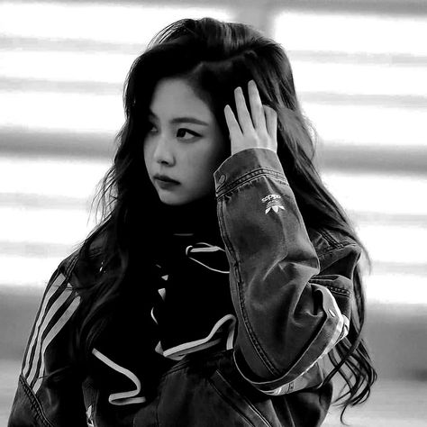

Kim Jennie BlackPink
About Jennie
Jennie Kim (Korean: 김제니; born January 16, 1996), known mononymously as Jennie, is a South Korean singer, rapper, and actress. Born and raised in South Korea, Jennie studied in New Zealand for five years before returning to South Korea in 2010. Known for her mesmerizing stage presence and versatile talent, Jennie has not only dominated the K-pop scene as a part of the record-breaking girl group but has also carved her niche as a solo artist. Jennie has officially announced that she has established her own agency. Jennie personally confirmed the reports that she has officially established her own agency called OA (ODD ATELIER)
About BlackPink
Jennie Kim, often known simply as Jennie, is a South Korean rapper, singer, and dancer. She rose to fame as a member of the popular K-pop girl group BLACKPINK, which debuted under YG Entertainment in 2016. Jennie is known for her powerful stage presence, charismatic personality, and versatile talent. Throughout her career, Jennie has been recognized for her contributions to music, fashion, and culture, solidifying her status as one of the leading figures in the global entertainment industry. BlackPink members are Jisoo, LaLisa, Park rose, and handsome Kim Jennie.
.jpeg)
|
 |
.jpeg)
|